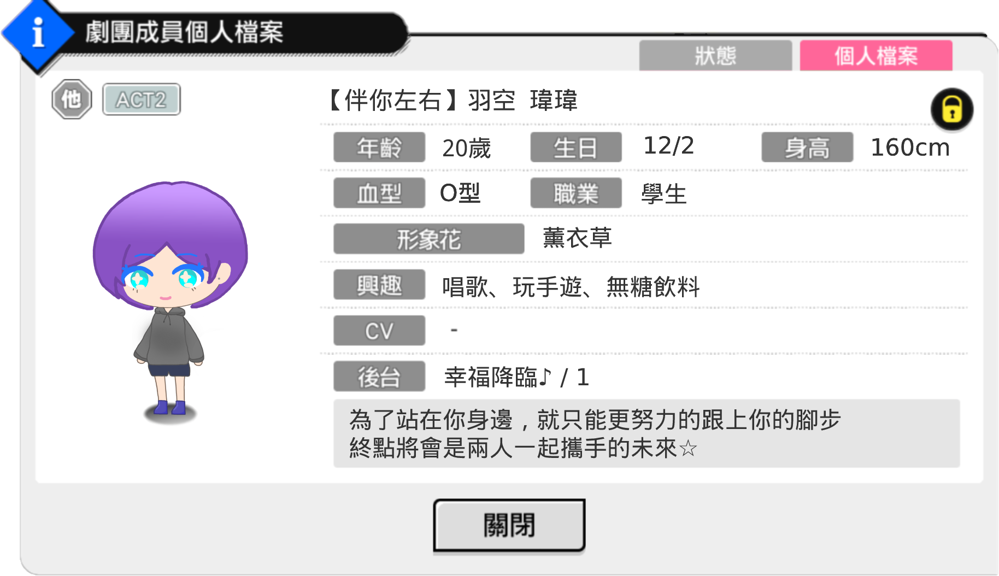

Act2 設定
稱呼（綽號）
空、瑋瑋、羽空さん（交往前）、瑋瑋ちゃん（限熟人和一成可以叫）
跟Act1不同之處
穿著方面，開始會在跟一成約會時嘗試穿一些裙裝（多半為一成為她挑選）
課業方面，本來就是認真讀書的人，但在跟一成交往後，有越來越更在乎課業的趨勢，常常會因此廢寢忘食，讓身邊的人擔心。
跟一成交往後，兩個人彼此互相激勵，也很常去咖啡廳一起寫大學報告。
跟夏組的大家越來越熟捻，也認識了某些團員的女友（？